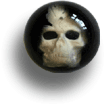
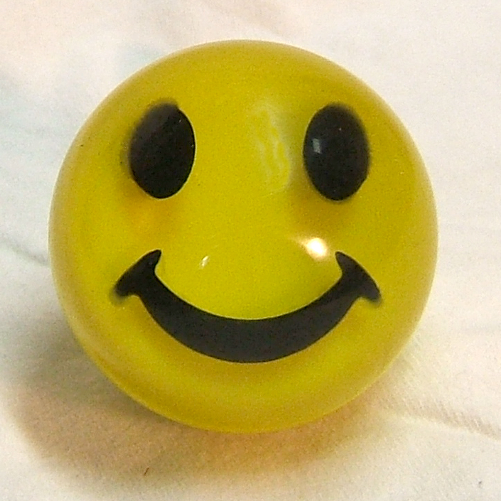
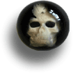
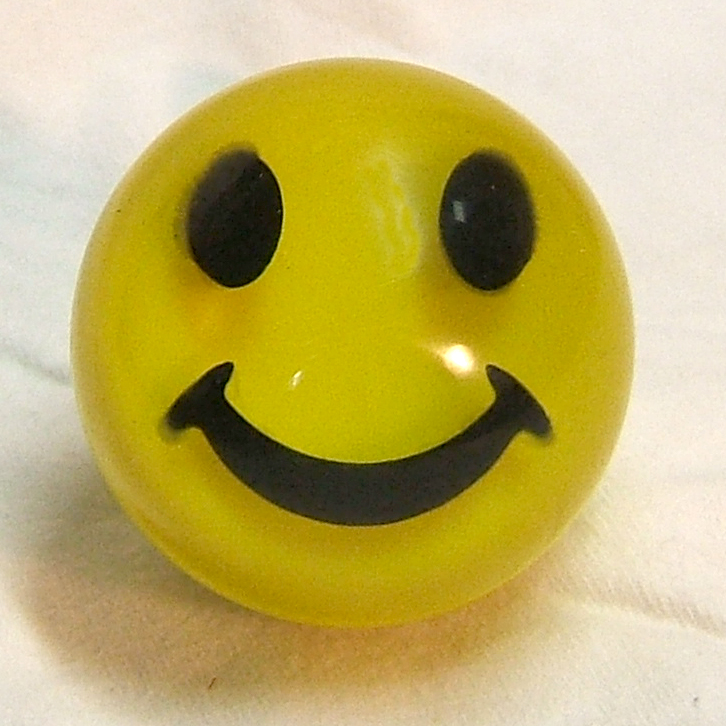

|
|
Koolknobs BrandR Custom Shifter KnobsCheck out the Samples page for photos of the latest Koolknobs Brand shifter knobs! Hand crafted custom shift knobs for your car, truck, 4 X 4, custom, or even for bikes! Do you have a car you love? Personalize it with a Koolknobs Brand product. Looking for something unique to set off your car's interior? You'll love Koolknobs brand products! They're just what you've been looking for. You'll enjoy great prices (check out the order page) on a quality product. The knob and the adapter (in most cases) for one reasonable price! Hand crafted shifter and dash type knobs, customized to fit your car or personality. Great for:
Koolknobs brand shift knobs are one-of-a-kind, unique! You can put all kinds of things in them- check out the photos page for ideas. Colors, swirls, pins, almost anything that's dry and under 2" will fit custom CNC machined molds for a knob that only you will have! They come with adapters to fit your vehicle. For more on how you can have one, just check out the contact or order page. Then email with your questions.   Contact Bruce Roosa at koolknobs@collinscom.net New product announcement! Now in the Koolknobs Brand lineup are small knobs for dashboards, door locks, valve stem caps, valve cover bolts, or any other use your mind can put them to. Check out the Samples page for a photo of them on a '63 Falcon Ranchero dash. Another new item in the Koolknobs brand lineup is the Photoknob! You can email a photo image of just about anything to be placed in the knob for you. The only images that can't be used are ones that are protected by copyright. Family members, pets, your vehicle, or any other original item will work great and really personalize the knob. Got a Lokar brand shifter? You can now have a Koolknobs brand product on your shift lever! Koolknobs Brand products has developed a button to fit this popular shift lever based on requests from many customers. Available in two color swirls only (nothing cast inside) at this time, but work continues on this adapter... click to see a photo. |


{kind=link}
{kind=link}
{kind=link}